Chapter 5 引用
Libraries cannot provide new inabilities.
——Mark Miller
我们至今为止见过的所有指针类型——简单的Box<T>堆指针、String和Vec内部的指针都拥有值：当所有者被drop时，指针指向的值也会随之消失。Rust还有非拥有指针类型，称为引用，引用对指向的值的生命周期没有影响。
事实上，正相反，引用绝不应该比它们指向的值活的更长。你必须在你的代码中明确表明引用的寿命比它指向的值更短。为了强调这一点，Rust将创建某个值的引用称为借用(borrow)值：最终必须把借走的还给所有者。
如果你在读到“你必须在你的代码中明确表明”时感到一阵怀疑，那说明你很优秀。引用自身并没有什么特殊的——本质上，它们只是地址。但保证它们安全的规则是Rust独有的，你以前不可能看到过类似的。尽管这些规则是Rust里最难掌握的部分，但它们能防止的经典的、日常的bug的范围之广令人惊讶，它们对多线程的影响也正在显现。这也是Rust的赌注。
这一章中，我们将讨论Rust中的引用如何工作，展示引用、函数和自定义类型如何包含生命周期信息来保证它们被安全使用，阐释它怎么能在编译期、不引入运行时开销的同时防止常见的bug。
5.1 值的引用
举个例子，假设我们要为文艺复兴时期优秀的艺术家和他们的著名作品建一个表格。Rust的标准库包含一个哈希表类型，所以我们可以像这样定义我们的类型：
换句话说，这是一个把String值映射到Vec<String>值的哈希表，它把艺术家的名字关联到它们的作品的名字。你可以使用for循环来迭代HashMap的条目，因此我们可以写一个函数打印出一个Table：
构造和打印表格都很直观：
fn main() { let mut table = Table::new(); table.insert("Gesualdo".to_string(), vec!["many madrigals".to_string(), "Tenebrae Responsoria".to_string()]); table.insert("Caravaggio".to_string(), vec!["The Musicians".to_string(), "The Calling of St. Matthew".to_string()]); table.insert("Cellini".to_string(), vec!["Perseus with the head of Medusa".to_string(), "a salt cellar".to_string()]); show(table); }它也能正常工作：
但如果你阅读过上一章中有关move的小节，你就会发现show的定义有一些问题。首先，HashMap不是Copy类型——它不可能是，因为它持有动态分配的表格。因此当程序调用show(table)时，整个结构体都被移动到函数里，变量table将变为未初始化。（迭代它时没有特定的顺序，你可能会得到一个不同的顺序，不用担心）如果调用者代码尝试继续使用table，它会遇到问题：
Rust会报错table不再可用：
error: borrow of moved value: `table` | 20 | let mut table = Table::new(); | --------- move occurs because `table` has type | `HashMap<String, Vec<String>>`, | which does not implement the `Copy` trait ... 31 | show(table); | ----- value moved here 32 | assert_eq!(table["Gesualdo"][0], "many madrigals"); | ^^^^^ value borrowed here after move事实上，如果我们仔细查看show的定义，会发现外层的for循环获取了哈希表的所有权然后完全消费了它，内层的for循环对每一个vector做了同样的事（我们之前已经在“liberté, égalité, fraternité”的例子中见过这种行为了）。因为move语义，我们仅仅是为了打印它就已经完全销毁了整个结构体。感谢你，Rust！
正确的处理方式是使用引用。引用让你可以访问一个值，同时不影响它的所有权。引用有两种：
-
•
共享引用让你能读取但不能修改被引用的值。然而，你可以同时持有多个共享引用。表达式&e返回一个指向e的值的共享引用，如果e的类型是T，那么&e的类型就是&T，读作“ref T”。共享引用是Copy类型。
-
•
如果你有一个值的可变引用，你可以读取和修改这个值。然而，你不能同时再有任何其他有效的引用。表达式&mut e返回一个指向e的值的可变引用，它的类型是&mut T，读作“ref mute T”。可变引用不是Copy类型。
你可以将共享和可变引用的区别看作是一种在编译期强制多个读者或一个写者的规则的方法。事实上，这个规则不仅适用于引用，还适用于被借用的值的所有者。只要一个值有共享引用存在，就算是它的拥有者也不能修改它，此时这个值已经被锁定了。当show正在使用table时没有人可以修改table。类似的，当一个值有可变引用时，它会排斥其他所有对这个值的访问，此时你不能使用值的拥有者，直到可变引用消失。将共享和可变完全分离开来是内存安全的基础，我们将会在下一章介绍原因。
引用是非拥有指针，所以table变量仍然保留着整个数据结构的所有权，show只是借用了它。当然，我们还需要调整show的定义来进行匹配，但你必须仔细看才能看出其中的区别：
show的参数table的类型从Table变为了&Table：不再以值传递表格（会导致所有权移动到函数里），我们现在传递一个共享引用。这就是表面上唯一的变化。但是当我们执行函数体时到底是怎么工作的？
我们原先的版本for循环会获取HashMap的所有权并消耗它。在新版本中它接受一个HashMap的共享引用，迭代HashMap的共享引用被定义为产生每个条目的key和value的引用：artist从一个String变为&String，works从一个Vec<String>变为&Vec<String>。
内部的循环也有类似的变化。迭代vector的共享引用被定义为产生它的每个元素的共享引用，因此work现在是一个&String。这个函数里不再有任何所有权的变化，而是传递各种无所有权的引用。
现在，如果我们想写一个函数来把每个艺术家的作品按字母顺序排列，一个共享引用显然不够，因为共享引用不允许修改。排序函数需要表格的可变引用：
这个可变借用赋予了sort_works读取和修改我们的结构体的能力，以满足vector的sort方法的需要。
当我们以会把所有权移动到函数中的方式传参时，我们称这种方式为以值传参。如果我们传递值的引用，我们称之为以引用传参。例如，我们通过将以值传参修改为以引用传参修复了show函数。许多语言都有这种区别，但它在Rust中尤其重要，因为它阐明了所有权如何被引用影响。
5.2 使用引用
上面的例子展示了引用的一个经典应用：允许函数在不获取所有权的情况下访问或者操作一个数据结构。但引用要更加灵活，让我们通过一些例子来进行更深入的了解。
5.2.1 Rust的引用 vs C++的引用
如果你熟悉C++的引用，你会发现它和Rust中的引用有很多相似之处。最重要的是，它们在机器层面都只是地址。但在实践中，Rust的引用使用起来有一种不同的感觉。
在C++中，引用通常通过隐式转换来创建，然后隐式解引用：
在Rust中，引用通过&运算符显示创建，通过运算符显式解引用：
要想创建可变引用，使用&mut运算符：
但是你可能回想起来，我们修改show函数让它以引用获取艺术家的表格时，我们从来没有使用过*运算符。这是为什么呢？
因为引用在Rust中使用如此广泛，所以如果需要的话，.运算符会隐式解引用它左侧的操作数：
show函数里使用的println!宏会展开为使用.运算符的代码，因此它也利用了这种隐式解引用。
如果方法调用需要的话，.运算符还会隐式借用左侧操作数的引用。例如，Vec的sort方法会获取vector的可变引用，因此下面的两个调用时等价的：
简而言之，C++在引用和左值（指向某个内存地址的表达式）之间隐式转换，如果需要这种转换会在任何地方出现；而在Rust中使用&和*运算符来创建和解引用，除了.运算符是个例外，它会自动隐式借用和解引用。
5.2.2 对引用赋值
把一个引用赋值给变量会让这个变量指向新的东西：
引用r一开始指向x。但如果b为true，r将指向y，如图5-1所示。
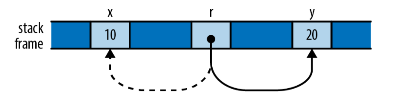
代码的行为似乎太过于简单而不值一提：显然r现在会指向y，因为我们把&y赋给了它。但我们指出这一点是因为C++的引用与此差别很大：如之前展示的一样，在C++中对一个引用赋值会把值存储在引用指向的对象。一旦一个C++引用被初始化之后，将没有任何方法让它指向别的东西。
5.2.3 引用的引用
Rust允许引用的引用：
在内存中，这些引用按照图5-2的形式排布。
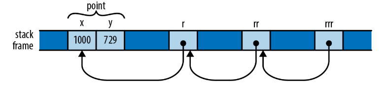
因此表达式rrr.y，在rrr的类型的引导下，实际上进行了3次解引用才得到了Point值，然后才能获得它的y字段。
5.2.4 比较引用
类似于.运算符，Rust比较运算符可以“看穿”任意数量的引用嵌套：
这里，最后的断言会成功，尽管rrx和rry指向不同的值（rx和ry），但因为==运算符会解除所有的引用然后对最终的值x和y进行比较。这几乎总是你想要的行为，尤其是编写泛型函数时。如果你实际上是想知道两个引用是否指向相同的内存位置，你可以使用std::ptr::eq，它会按照地址比较引用：
5.2.5 引用永不为空
Rust的引用永远不可能为空，没有类似C的NULL或C++的nullptr的值。引用没有默认初始值（不管什么类型，你不能在一个变量初始化之前使用它）并且Rust不允许把整数转换为引用（除了unsafe代码），因此你不能把0转换为引用。
C和C++经常使用空指针来表示没有值：例如，malloc函数会返回一个指向新内存块的指针，但如果没有足够的内存能够满足要求就会返回一个nullptr。在Rust里，如果你需要一个可能是引用可能是无的值，你可以使用类型Option<&T>。在机器层面，Rust将None表示为空指针，将Some(r)（其中r是一个&T类型的值）表示为非0的地址，因此Option<&T>和C或C++中的可以为空的指针一样高效，然而它却是安全的：它的类型要求你在使用它之前要先检查它是不是None。
5.2.6 借用任意表达式的引用
C和C++只允许你对特定种类的表达式使用&运算符，而Rust允许你借用任何表达式的引用：
在类似这样的场景中，Rust简单地创建一个匿名变量来存储表达式的值，然后让引用指向它。匿名变量的生命周期依赖于你使用引用的方式：
-
•
如果你立刻通过一个let语句把它赋值给了一个变量（或者将它变为了结构体或数组的一部分），那么Rust会让匿名变量的生命周期变得和let初始化的变量一样长。在上面的例子中，Rust将会对r引用的值进行这样的操作。
-
•
否则，匿名变量将只能生存到语句结束。在我们的示例中，存储1009的匿名变量只生存到assert_eq!语句的结尾处。
如果你习惯于C或C++，这可能听起来很容易出错。但记住Rust永远不会让你写出产生悬垂引用的代码。如果引用被用在匿名变量的生命周期之外，Rust总是会在编译期向你报告这个问题。然后你可以把被引用的值保存在一个有恰当的生命周期的命名变量中来修复代码。
5.2.7 切片和trait对象的引用
我们至今展示的所有引用都只是简单的地址。然而，Rust还包括两种类型的胖指针：包含值的地址和使用值所必需的额外信息的两个字的值。
切片的引用是一种胖指针，包括切片的起始地址和它的长度。我们在第3章中详细讨论了切片。
Rust的另一种胖指针类型是trait对象，一个实现了特定trait的值的引用。一个trait对象包含值的地址和一个指向该值对trait的实现的指针，用于调用trait的方法。我们将在trait对象一节中详细介绍trait对象。
除了携带了这些额外信息之外，切片和trait对象的引用和我们在这一章中目前见到的所有引用一样：它们并不获取所有权，不允许比引用对象生存得更久，可能是共享或者可变的，等等。
5.3 引用安全
正如我们目前为止展示的一样，引用与C和C++中的普通指针看起来非常像。但那些指针是不安全的，Rust怎么能保证引用的安全呢？可能最简单的发现规则的方法就是尝试去打破规则。
为了展示最基础的思想，我们将以最简单的例子开始，展示Rust是怎么保证引用在单个函数体里被正确使用。然后我们会看到在函数之间传递引用和在数据结构中对它们排序。这意味着要给函数和数据类型提供生命周期参数，我们马上会解释它。最后，我们会展示一些Rust提供的用于简化常用模式的缩写。在这个过程中，我们会看到Rust是怎么指出错误代码并给出建议的解决方岸。
5.3.1 借用一个局部变量
这里有一个非常明显的例子。你不能借用一个局部变量的引用然后把它带出变量的作用域：
Rust的编译器会拒绝这个程序，并给出详细的错误消息：
Rust说x只生存到内层块的末尾，然而引用一直生存到外层块的末尾，因此它会变为悬垂指针，这是禁止的。
尽管对于人类来说很容易就能看出来这个程序是错误的，但Rust是如何得到这个结论的值得探究。每一个简单的例子都展示了Rust用于检查更多复杂代码的工具。
Rust尝试给你的程序中的每一个引用赋予一个生命周期，这个生命周期要满足使用它的方式带来的约束。一个生命周期是一个引用可以安全使用的程序区间：可能是一条语句、一个表达式、也可能是一些变量的作用域，或者类似的区间。生命周期完全是Rust的编译期视图。在运行时引用只是一个地址，生命周期是它的类型的一部分，并没有运行时表示。
这个例子中，我们需要搞清楚三个生命周期的关系。变量r和x都有一个生命周期，从它们被初始化一直持续到编译器可以证明它们不会再被使用为止。第三个生命周期是一个引用类型的：我们从x借用并存储到r中的引用。
有一个规则应该非常明显：如果你有一个变量x，那么对x的引用不能比x的生命周期更长，如图5-3所示。
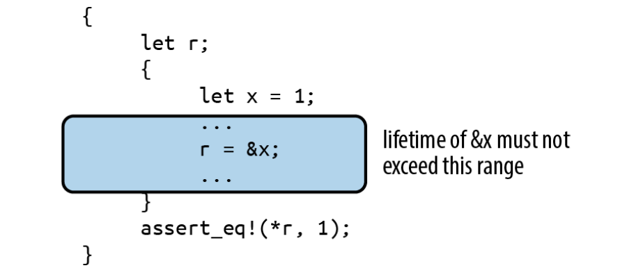
当x离开作用域之后，引用将变为悬垂指针。因此我们说变量的生命周期必须包含或包括它的引用的生命周期。
这里还有另一种约束：如果你把引用存储到变量r中，引用的生命周期必须覆盖变量的整个生命周期：从它初始化到最后一次使用它，如图5-4所示。
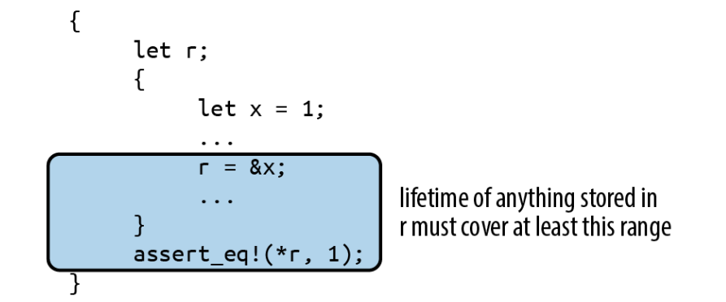
如果引用不能和变量生存的一样长，那么在某些区域内指针r会变成悬垂指针。因此我们说引用的生命周期必须包含或包括存储它的变量的生命周期。
第一种约束限制了引用生命周期的上限，第二种约束限制了它的下限。Rust简单的尝试为每个引用找到一个满足这两个约束的生命周期。然而在我们的例子中，不存在这样的生命周期，如图5-5所示。
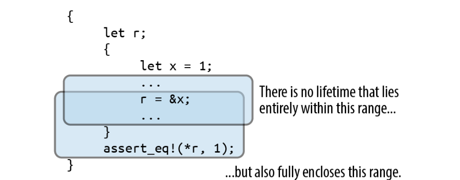
让我们考虑一个可以正常工作的不同的例子。我们有相同的约束：引用的生命周期必须被x的生命周期包含，但又要包含r的生命周期。但因为现在r的生命周期变小了，所以存在这样一个满足约束的生命周期，如图5-6所示。
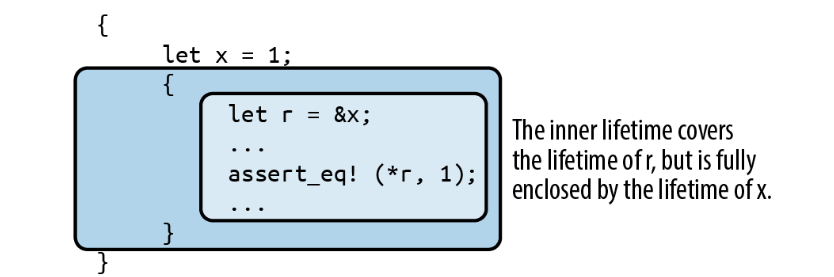
因为v拥有vector，vector又拥有它的元素，所以v的生命周期必须包含引用&v[1]的生命周期。类似的，如果你把引用存储在了某些数据结构之中，那引用的生命周期必须包含这个数据结构的生命周期。例如，如果你创建了一个引用的vector，那么每个引用的生命周期都必须包含拥有这个vector的变量的生命周期。
这是Rust对所有代码进行的实质的处理。如果考虑更多的语言特性——例如复杂的数据结构和函数调用，只是会引入新的约束，但核心原则是不变的：首先，理解程序使用引用的方式所带来的约束；然后，找到满足这些约束的生命周期。这与C和C++程序员给自己施加的限制没有太大区别，区别在于Rust自己知道这些规则并且强迫它们执行。
5.3.2 引用作为函数参数
我当我们向函数传递引用时，Rust怎么保证函数安全地使用它？假设我们有一个函数f，这个函数接受一个引用，然后把它存储到一个全局变量中。我们之后会进行一些修改，不过这里有一个最初的版本：
Rust中的全局变量叫做静态变量：它在程序开始时就被创建，直到程序终止时才被销毁。（类似其他的声明，Rust的模块系统控制静态变量在哪些部分可见，它们的“全局”只体现在生命周期上，而不是在可见性上）我们将在第8章中介绍静态变量，但现在我们只列出几条代码没有遵守的规则：
-
•
每一个静态变量必须被初始化
-
•
可变的静态变量天然是线程不安全的（因为所有线程都可以在任何时间访问一个静态变量），即使在单线程程序中，它们也可能成为其它类型的重入问题的牺牲品。因为这些原因，你只能在unsafe块中使用可变的静态变量。在这个例子中我们并不关注那些特定的问题，我们只是把它放进unsafe块中，然后继续。
这里，生命周期’a（读作“tick A”）是f的一个生命周期参数。你可以将<’a>读作“对于任何生命周期’a”，因此当我们写fn f<’a>(p: &’a i32)时，我们定义了一个接受一个i32类型且带有任何给定生命周期’a的参数的函数。
因为STASH在程序的整个执行过程中都存在，所以它持有的引用必须有相同长度的生命周期；Rust把这种生命周期称为’static生命周期。但是p的生命周期是’a，这意味着它可以是任何包含对f的调用的生命周期。因此，Rust拒绝了我们的代码：
到这里，已经很明显了，我们的函数不能接受任意引用作为参数。但正如Rust指出的一样，它应该能接受一个有’static生命周期的引用：把这样一个引用存储到STASH不会导致悬垂指针。并且确实，下面的代码可以编译：
这一次，f的签名指明了p必须是一个有’static生命周期的引用，因此将它存储在STASH中没有任何问题。我们只能将f用于其他静态变量的引用，但这是唯一一种保证STASH不会变为悬垂指针的方法。因此我们可以写：
因为WORTH_POINTING_AT是一个静态变量，所以&WORTH_POINTING_AT的类型是&’static i32，可以安全地传递给f。
稍微后退一步，注意一下我们这种修改的方式让f的签名发生了什么变化：原本的f(p: &i32)变为了f(p: &’static i32)。换句话说，如果不在函数签名中表明我们的意图，我们将不能写出一个把引用存储在全局变量中的函数。在Rust中，一个函数的签名总是暴露出函数体的行为。
反过来说，如果我们看到了一个函数签名例如g(p: &i32)（或者写出了生命周期的g<’a>(p: &’a i32)），我们将能辨别出它不会把参数p存储在此次调用之外的变量中。我们不需要查看g的定义，g的签名已经告诉了我们它能做什么和不能做什么。当你想保持函数调用的安全性时，这一点会很有用。
5.3.3 向函数传递引用
现在我们已经展示了一个函数的签名怎么和它的函数体关联起来，让我们继续解释它怎么和函数的调用者联系起来。假设你有下面的代码：
仅仅从g的签名，Rust就知道它不会把p存储在生命周期超过此次调用的变量中：任何包含此次调用的生命周期’a都一定能正常工作。因此Rust为&x选择了最小的可能的生命周期：也就是对g的调用。这满足了所有的约束：它的生命周期没有超过x、包含g的整个调用。因此这段代码可以通过检查。
注意尽管g有一个生命周期参数’a，我们在调用g时不需要提到它。你只需要在定义函数和类型时担心生命周期参数，当使用它们时，Rust会为你推断生命周期。
这样会编译失败：引用&x不能生存的比x更久，但传递给f时，我们约束它至少要和’static生存的一样久。没有办法同时满足所有约束，所以Rust会拒绝这段代码。
5.3.4 返回引用
一种很常见的场景是一个函数接受一些数据结构的引用，然后返回一个指向这个结构中部分数据的引用。例如，这里有一个函数返回一个切片中最小的元素的引用：
我们按照通常的方式省略了函数签名中的生命周期参数。当一个函数接收单个引用作为参数并返回单个引用时，Rust假设这两个引用一定有相同的生命周期。如果显式写出生命周期将是：
假设我们像这样调用smallest：
通过smallest的签名，我们能看出它的参数和返回值必须有相同的生命周期’a。在我们的调用中，参数¶bola不能比parabola生存的久，然而smallest的返回值又至少要和s生存的一样久。不存在生命周期’a可以同时满足这两个约束，因此Rust拒绝了代码：
error: `parabola` does not live long enough --> references_lifetimes_propagated.rs:12:5 | 11 | s = smallest(¶bola); | -------- borrow occurs here 12 | } | ^ `parabola` dropped here while still borrowed 13 | assert_eq!(*s, 0); // bad: points to element of dropped array | - borrowed value needs to live until here 14 | }移动对s的使用来保证它的生命周期被parabola的生命周期包含可以解决这个问题：
函数签名中的生命周期让Rust能获得传进函数的引用和函数返回的引用的关系，然后保证它们都被安全地使用。
5.3.5 包含引用的结构体
Rust怎么处理存储在数据结构中的引用？这里有一个我们之前看到的错误的程序，不过现在我们把它存在了一个结构体中：
Rust对引用安全的约束不可能因为我们把引用藏在了结构体里就神奇的消失。这些约束最终也会作用在S上。事实上，Rust是很多疑的：
现在类型S也有了一个生命周期，就像引用类型一样。你创建的每一个类型S的值都有一个新的生命周期’a，它会成为你使用值的约束。你存储在r中的引用的生命周期需要包含’a，’a需要包含存储这个S的变量的生命周期。
回到之前的代码，表达式S { r: &x }创建了一个生命周期为’a的新S。当你把&x存储到r字段时，你约束了’a的生命周期必须被x的生命周期包含。
赋值语句s = S { ... }把S存储到了变量中，变量的生命周期直到示例的结尾处，’a的生命周期需要包含s的生命周期。现在Rust遇到了和之前一样的矛盾的约束：’a的生命周期不能超过x，但又要至少和s一样长。没有满足条件的生命周期存在，所以Rust拒绝了这段代码。避免了灾难！
Rust是多疑的，正如我们在不指明生命周期的情况下把引用存储在S中一样：
我们不能在这里省略S的生命周期：Rust需要知道D的生命周期和S中的引用的生命周期的关系，这样才能对D进行和对S、普通引用一样的检查。
有了这个定义之后，S字段只能借用生命周期等于整个程序的值。这太严格了，它意味着D不能借用本地变量，D的生命周期没有特殊的限制。
Rust的错误信息建议了另一种更通用的解决方法：
通过接受一个生命周期参数’a并把它用于s的类型，我们就可以允许Rust把D的值的生命周期关联到它持有的S的生命周期。
我们之前展示了函数的签名怎么暴露出它对传入的引用的操作。现在我们展示了关于类型的相似之处：一个类型的生命周期参数总是表明它是否持有一些带有有趣的（也就是非’static的）生命周期的引用，以及这些生命周期是什么样的。
例如，假设我们有一个解析函数，这个函数接受一个字节切片，返回一个保存解析结果的结构体：
根本不需要查看Record类型的定义，我们就可以判断出，如果我们获得了一个
parse_record返回的Record，那么它里面包含的引用一定指向我们传入的缓冲区内的内容，而不是别的东西（除了可能的’static值）。
事实上，这种内部行为的暴露是Rust要求持有引用的类型显式写出生命周期参数的主要原因。否则，Rust完全可以为结构体中的每个引用标注一个不同的生命周期，让你可以省去写出它们的麻烦。早期版本的Rust确实是这么做的，但开发者发现这样会让人很迷惑。知道一个值什么时候从另一个值里借用了部分内容是很有用的，特别是解决bug时。
不只有引用和像S这样的类型才有生命周期。Rust中的每个类型都有生命周期，包括i32和String。大多数都是简单的’static，意味着这些类型的值想要生存多久就能生存多久。例如，一个Vec<i32>是自包含的，不需要在其他任何值离开作用于之前drop。而一个类型例如Vec<&’a i32>的生命周期必须被’a包含：在它引用的值离开作用域之前它必须被drop。
5.3.6 不同的生命周期参数
这两个引用的生命周期都是’a。如果你想像下面这样做的话这可能会是一个问题：
这段代码不会制造任何悬垂指针。对y的引用存储在s中，s在y离开作用于之前先离开作用域。x的引用随着r结束，没有超过x的生命周期。
然而，如果你尝试编译这段代码，Rust会报错说y生存的不够久，尽管显然它的生命周期已经够了。
Rust为什么会报错？如果你仔细思考这段代码，你会发现以下原因：
-
•
s的两个字段都有相同的生命周期’a，所以Rust必须找到一个生命周期同时适用于s.x和s.y。
-
•
我们进行了赋值r = s.x，这要求’a必须包含r的生命周期。
-
•
我们用&y初始化了s.y，这要求’a必须不超过y的生命周期。
这些约束不可能同时满足：没有生命周期比y的作用域短又比r的长。所以Rust报错了。
问题出现的原因是S中的两个引用有相同的生命周期’a。将S的定义修改为每个引用有一个不同的生命周期就可以解决问题：
有了这个定义，s.x和s.y就有了独立的生命周期。我们对s.x做什么都不会影响我们存储在s.y中的值，因此现在可以很容易地满足约束：’a可以直接是r的生命周期，’b是s的生命周期（y的生命周期也可以用作’b，但Rust尝试选择最小的满足条件的生命周期）。这样一切都没有问题了。
函数的签名也可以有相似的效果。假设我们有一个类似这样的函数：
这里，两个生命周期参数使用了相同的生命周期’a，这可能会像我们之前展示的一样对调用者施加不必要的约束。如果这导致了问题，你可以让每个参数都有独立的生命周期：
这样的缺点是添加生命周期可能会导致类型和函数类型更难阅读。你们可以先尝试最简单的定义然后逐渐放松限制直到代码能够编译。因为Rust不允许不安全的代码，等Rust告诉你哪有问题然后再去修复是一个完美的策略。
5.3.7 省略生命周期参数
目前为止我们已经展示了足够多的返回引用或获取引用参数的函数，但我们通常不需要写出哪个生命周期是哪个。当生命周期很明显的时候Rust让我们可以省略它们。
在最简单的例子中，你可能永远都不需要写出参数的生命周期。Rust会为每一个需要声明周期的位置分配一个生命周期。例如：
如果你返回了带有生命周期的参数的引用或其它类型，Rust仍会尝试允许无歧义的情况下省略。如果你的函数参数中只有一个生命周期参数，那么Rust会假设你的返回值中的所有生命周期参数都是那一个：
如果参数里有多个生命周期参数，编译器没有简单的方法推断出返回值中的生命周期参数是哪个，此时Rust会要求你指明。
如果你的函数是某个类型的方法，并通过引用获取self参数，那么会打破这个限制：Rust会假设是返回值中所有内容的生命周期都和self的生命周期相同。（Rust中的self参数代表调用这个方法的值，等价于C++、Java、JavaScript中的this，或者Python中的self。我们将在使用impl定义方法一节中介绍方法。）
例如，你可以写如下代码：
find_by_prefix方法的签名是如下签名的缩写：
Rust假设如果你要借用，那么你会从self借用。
同样，这些只是缩写，用来提供帮助，并不能带来惊喜。如果它们不是你想要的，你可以显式写出生命周期。
5.4 共享vs可变
到目前为止，我们已经讨论了Rust如何保证没有引用会指向已经离开作用域的变量。但还有其它方法造成悬垂指针。这里有一个简单的例子：
对aside的赋值会移动vector，将v设为未初始化，因此r变成了一个悬垂指针。如图5-7所示。
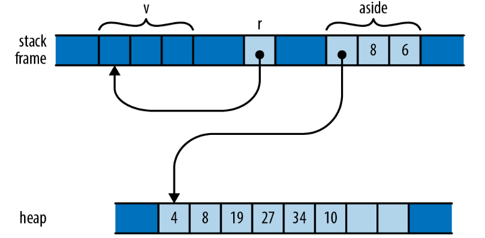
尽管r的整个生命周期内v都还在作用域之内，但问题是v的值被移动走了，v变为了未初始化，而r仍然指向它。自然，Rust捕捉到了这个错误：
在一个共享引用的整个生命周期内，它会使它引用的值只读：你不能对引用的值赋值或者移动它的值。在这段代码中，r的生命周期包括尝试移动vector的语句，因此Rust拒绝了这段代码。如果你按照下面这样修改，就不会有问题了：
在这个版本中，r更早离开作用域，在v被移动之前引用的生命周期就结束了，因此没有任何问题。
这里还有一种导致问题的方式。假设我们有一个函数用一个切片里的元素扩展一个vector：
这是标准库里vector的extend_from_slice的一种不够灵活（也不够优化）的版本。我们可以使用它从其他vector或数组的切片构建vector：
这里我们构建了正弦波的一个周期。如果我们想再添加一个周期，我们可以把vector附加给它自己吗？
粗略地检查一遍，感觉这好像没有问题。但记住当我们把元素添加到vector中时，如果缓冲区已经满了，它必须重新分配一个更大的缓冲区。假设wave一开始有4个元素，因此当extend尝试添加第5个元素时wave必须分配更大的缓冲区。此时内存布局看起来如图5-8。
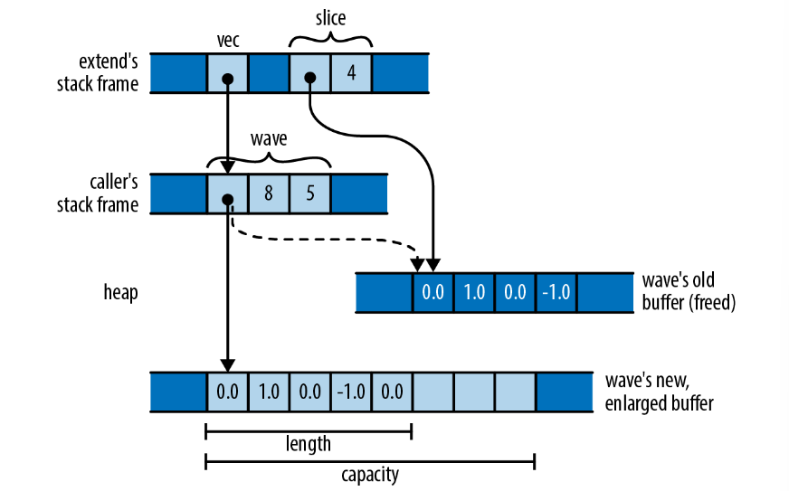
extend函数的vec参数借用了wave，wave已经分配了一个有8个元素的缓冲区，而slice仍然指向旧的4个元素的缓冲区，但这个缓冲区已经被drop了。
这种问题不是Rust独有的：在指向集合的同时修改集合在很多语言里都是很微妙的领域。在C++中，std::vector的规范提醒你“[vector的缓冲区的]重新分配会导致所有其中的元素的引用、指针、迭代器无效”。类似的，Java中有关修改java.util.Hashtable对象是这么说的：
如果创建了Hashtable的迭代器之后，Hashtable被修改了，除了迭代器自身的remove方法之外，任何操作都会导致迭代器抛出一个ConcurrentModificationException异常。
导致这种bug特别难解决的是它并不是总是发生。在测试中，你的vector可能总是恰好有足够的空间，缓冲区从来不重新分配，那这个问题可能一直都不会被曝光。
然而Rust会在编译期就汇报调用extend的问题：
换句话说，我们可以借用vector的可变引用，也可以借用它的元素的共享引用，但这两种引用的生命周期不能有重叠的部分。在我们的例子中，两个引用的生命周期都包含extend的调用，所以Rust拒绝了这段代码。
这些错误都违背了Rust关于可变和共享的核心规则：
共享访问是只读的访问
共享引用借用的值是只读的。在一个共享引用的生命周期中，不管是它引用的值，还是任何通过这个值可以访问的东西，都不能被任何东西修改。如果一个结构体的所有者是只读的，将不允许指向结构体中任何内容的可变引用。它实际上被冻结了。
可变访问是独占的访问
可变引用借用的值只能通过这个引用访问。在一个可变引用的生命周期内，没有任何其他方法访问被引用的值或通过这个值可以访问到的值。唯一能与可变引用的生命周期出现重叠的引用就是那个可变引用自己。
Rust会报告extend的例子违反了第二条规则：因为我们已经借用了wave的一个可变引用，这个可变引用必须是唯一访问vector和它的元素的方法。切片的共享引用是另一种访问元素的方式，因此违反了第二条规则。
但Rust也可以把我们的bug当成违反了第一条规则：因为我们已经获取了wave的元素的共享引用，元素和Vec自身都变为只读，所以你不能再借用一个只读值的可变引用。
每种引用都会影响我们可以对被引用的值，以及通过这个值可以访问的值进行的操作（图5-9）。
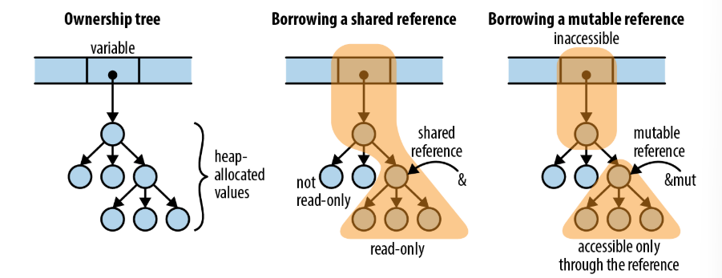
注意在两种情况下，在引用的生命周期内，所有权树中通往被引用值的路径都不可能被修改。对于共享引用，这个路径是只读的；对于一个可变引用，这个路径完全不可访问。因此程序没有任何方法让一个引用变的无效。
将这些原则分解为最简单的示例：
let mut x = 10; let r1 = &x; let r2 = &x; // ok：允许多个共享引用 x += 10; // error：不能对`x`赋值因为它已经被借用了 let m = &mut x; // error：不能借用`x`的可变引用， // 因为它已经被借用了不可变引用 println!("{}, {}, {}", r1, r2, m); // 引用都在这里使用 // 因此它们的生命周期 // 都只到这里 let mut y = 20; let m1 = &mut y; let m2 = &mut y; // error：不能再次借用可变引用 let z = y; // error：不能使用`y`，因为它被借用了可变引用 println!("{}, {}, {}", m1, m2, z); // 引用都在这里使用可以从一个共享引用借用一个共享引用：
也可以再次借用一个可变引用：
这些限制非常严格。回到我们调用extend(&mut wave, &wave)的地方，没有方便快速的方法修复代码让它按我们希望的方式运行。Rust在几乎所有地方应用这些规则：如果我们借用了一个HashMap里的一个键的共享引用，我们将不能借用整个HashMap的可变引用，直到共享引用的生命周期结束。
但有足够的理由这么做：设计一个支持不严格的、可以同时迭代和修改的集合是非常困难的，并且通常没有简单高效的实现。Java的Hashtable和C++的vector并不考虑这些、Python的字典、JavaScript的对象也没有定义这种情况下的行为。JavaScript中的其它集合类型做到了这一点，但也导致了更加笨重的实现。C++的std::map承诺插入新的条目不会使指向map中其他条目的指针失效，但为了实现这个承诺，标准中排除了类似Rust中的BTreeMap的更加缓存高效的实现，这种实现在树中的每个节点存储多个条目。
这里有另一个这些规则可以捕获的bug的例子。考虑下面的C++代码，用于管理一个文件描述符。为了保持简单，我们只写出构造函数和一个拷贝赋值运算符，并且省略错误处理：
如果们把一个File赋给它自己，那么rhs和*this是同一个对象，因此operator=会关闭它准备dup的文件描述符。我们销毁了想要拷贝的资源。
如果我们写出与之前使用File相对应的Rust代码，我们有：
当然，Rust拒绝编译代码：
这看起来很熟悉。它暴露出了两种典型的C++ bug——无法处理自我赋值以及使用无效的迭代器——两者实际上是同一种底层类型的bug！在这两种情况下，代码都假设它在修改一个值的同时访问另一个值，然而实际上它们是同一个值。如果你曾经偶然在C和C++中让memcpy或strcpy的调用的源区间和目标区间重叠，那么将会产生另一种形式的bug。通过要求可变引用必须独占，Rust可以避免各种各样的日常错误。
共享和可变引用的互斥实际上也展示了编写并发代码时值的状态。只有当值在某些线程中既可写又共享时才可能发生数据竞争——Rust的引用规则恰好可以避免这种情况。没有unsafe代码的并发Rust程序可以从构造上完全避免数据竞争。我们将在第19章中详细介绍更多有关并发的细节。但总的来说，在Rust中使用并发要比大多数其他语言轻松得多。
Rust的共享引用 vs C的常量指针
乍一看，Rust中的共享引用很像C和C++中指向const值的指针。然而，Rust对共享引用的限制要更严格。例如考虑下面的C代码：
p是const int *的事实意味着你不能通过p自身来改变它指向的值：(*p)++是禁止的。但你可以直接通过x访问被引用的值，而x并不是const，所以你可以直接修改它的值。C家族的const关键字有它的作用，但它并不能把指向的值变为常量。
在Rust中，一个共享引用会禁止对被引用值的任何修改，直到引用的生命周期结束：
为了确保值是常量，我们需要持续追踪所有可以访问到这个值的路径，并确保它们都不允许修改操作或者直接不可用。C和C++的编译器对指针的检查太过宽松。Rust的引用总是关联到一个特定的生命周期，这使得在编译期检查它们变得可行。
5.5 拿起武器对抗对象之海
自从19世纪90年代起自动内存管理兴起之后，所有程序的默认架构都变成了对象之海(sea of objects)，如图5-10所示。
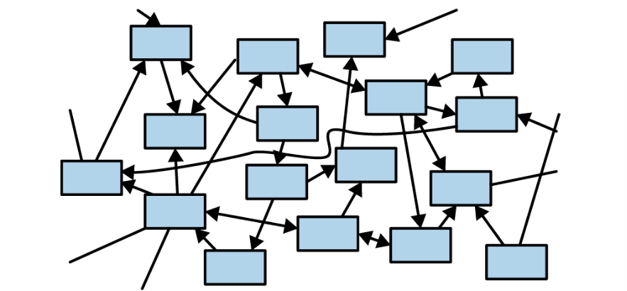
这就是如果你不假思索就开始编写程序并且有垃圾回收时的真实情景。我们都在构建这样的系统。
这种架构有很多图中没有显示出的优势：初始化很快、很容易破译里面的逻辑、而且即使几年之后你也可以轻易的完全重写它们。（Cue AC/DC’s “Highway to Hell.”（通往地狱的高速公路））。
当然，它也有很多缺陷。当每个东西都依赖别的任何东西的时候，将非常难以测试、推演、甚至单独考虑其中的任何一部分组件。
Rust迷人的一点就是Rust在通往地狱的高速公路上放了一条减速带。在Rust中需要花费大量的努力才能制造出环形引用——两个值互相包含指向彼此的引用。你必须使用智能指针例如Rc和内部可变性——一个我们还没有讲到的话题。Rust更喜欢指针、所有权、数据流朝一个方向流经整个系统，如图5-11所示。
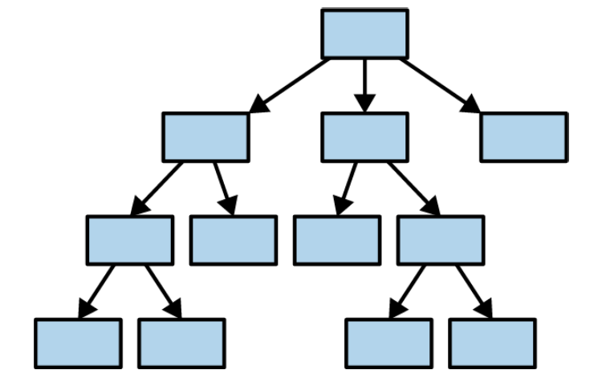
我们现在提出这一点的原因是，在阅读完这一章之后，你可能会很自然的想通过Rc智能指针创造一片“结构体的海洋”，然后完全重现你熟悉的面向对象的模式。你不能立刻就完成这些，因为Rust的所有权模型会给你制造一些麻烦。解决方法是事先进行设计并构建更好的程序。
Rust就是把理解你的程序的痛苦从未来转移到了现在。它做的非常好：它不仅强迫你理解为什么你的程序是线程安全的，它甚至还能要求一些高层级的架构设计。